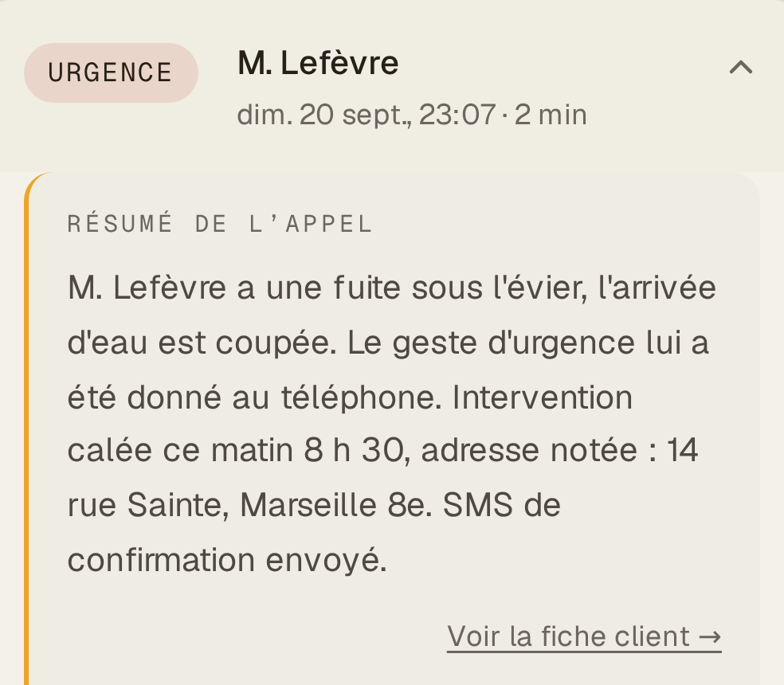

23:07
Un client appelle.
Message d'accueil
B I P
Il a raccroché. Il appelle le suivant.

Le même appel, intervention déjà calée.
Vokıo
Votre ligne répond même quand vous ne pouvez pas.
Appelez notre plombier fictif
vokio.fr
Établissement fictif · captures réelles de app.vokio.fr